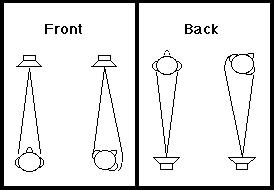

3. ECHOES AND REVERBERATION
In everyday listening, we are rarely aware of how much acoustic energy reaching our ears consists of reflections rather than direct sound. In enclosed spaces, the direct sound from a source is immediately followed by a dense series of reflections off walls, ceilings, floors, and furniture.

Direct Sound and The Precedence Effect (Haas Effect)
The direct sound travels in a straight line from source to listener and arrives first. It provides the primary acoustic cues for sound localization. If a reflection arrives within approximately 1 to 35 milliseconds of the direct sound, human hearing integrates it with the direct sound; rather than hearing a separate echo, the ear perceives increased loudness and warmth. This psychoacoustic phenomenon is known as the Law of the First Wavefront or the Haas Effect.
Discrete Echoes vs. Diffuse Reverberation
- Echoes: Occur when a reflection is delayed by more than approximately 50 ms and retains sufficient energy to be perceived as a distinct, separated repetition of the original sound.
- Reverberation: As reflections bounce repeatedly between room boundaries, their arrival density increases exponentially, blurring into a continuous, decaying wash of acoustic energy known as the reverberant tail.

Anechoic Chambers
An anechoic chamber is a specialized acoustic laboratory room whose walls, ceiling, and floor are covered with sound-absorbing fiberglass or foam wedges. In an anechoic environment, virtually 100% of incident sound energy is absorbed, eliminating reflections and simulating completely open free-field acoustic conditions. Anechoic chambers are essential for measuring pure loudspeaker responses and anatomical Head-Related Transfer Functions (HRTFs).
Localization and Spatial Perception
Reverberation is not merely background noise; it is a critical distance cue. While the direct sound level decreases by 6 dB for each doubling of distance (inverse square law), the reverberant energy in an enclosed space remains relatively uniform. Consequently, the Direct-to-Reverberant Energy Ratio (D/R ratio) enables listeners to estimate how far away a sound source is located.